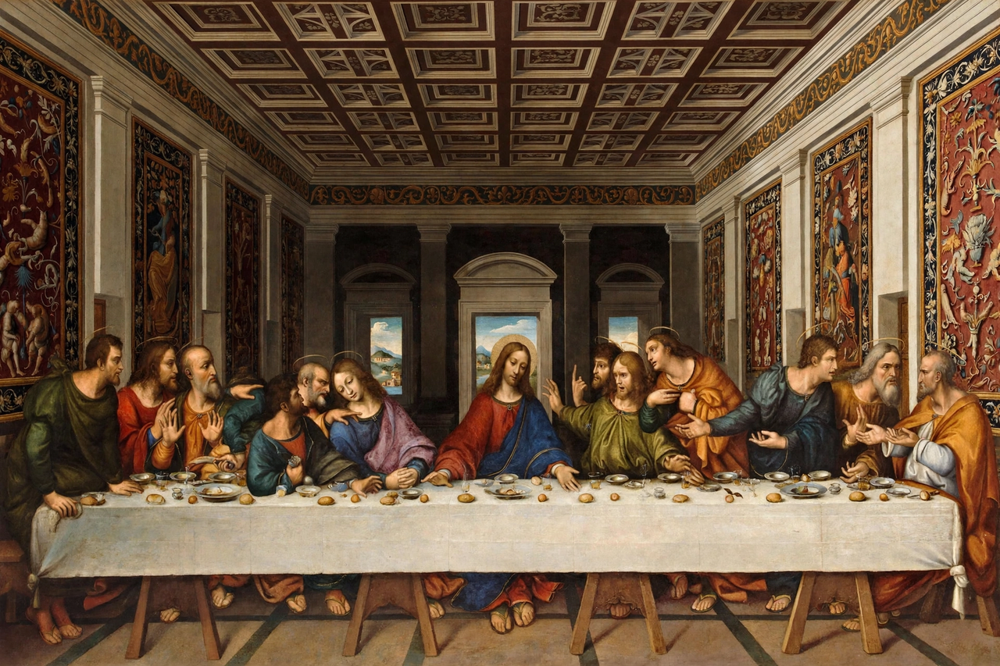

The Last Supper (Leonardo)

Leonardo's Last Supper on the refectory wall: Christ at the centre of a long table, arms spread, the apostles in four groups of three reacting to the announcement of betrayalThe Last Supper (Italian: Il Cenacolo) is a mural painting by the Italian High Renaissance artist Leonardo da Vinci, dated to c. 1495–1498. The painting represents the scene of the Last Supper of Jesus with the Twelve Apostles, as it is told in the Gospel of John — specifically the moment after Jesus announces that one of his apostles will betray him. It measures 460 cm × 880 cm and covers the end wall of the dining hall at the Dominican convent of Santa Maria delle Grazie in Milan, Italy.
Leonardo's experimental technique — working in a tempera-oil mixture on dry plaster rather than true fresco — began deteriorating within decades, and centuries of damage, botched restorations, a doorway cut through Christ's feet and wartime bombing make it a fragile survivor. A major restoration completed in 1999 revealed what could be saved. It remains one of the most famous and studied paintings in the world.